Agapostemon texanus
Agapostemon texanus native bee
Metallic green sweat bees, prairie-typical.
39 documented plant relationships.
sips nectar at
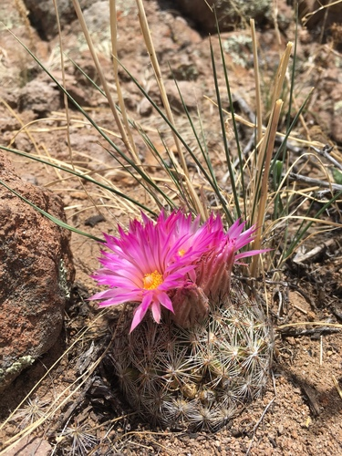
Ball CactusEscobaria vivipara Leslie Seaton, some rights reserved (CC BY)") BalsamrootBalsamorhiza sagittata
BalsamrootBalsamorhiza sagittata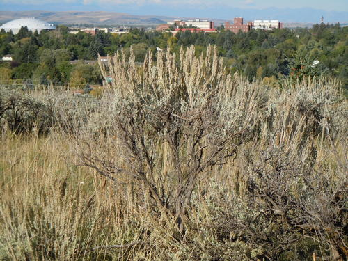
Big SagebrushArtemisia tridentataBlanketflowerGaillardia aristata Boreal YarrowAchillea borealis
Boreal YarrowAchillea borealis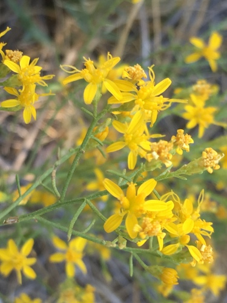
BroomweedGutierrezia sarothrae Douglas Goldman, some rights reserved (CC BY-SA), uploaded by Douglas Goldman") Canada GoldenrodSolidago canadensis
Canada GoldenrodSolidago canadensis Douglas Goldman, some rights reserved (CC BY-SA), uploaded by Douglas Goldman") FireweedChamaenerion angustifolium
FireweedChamaenerion angustifolium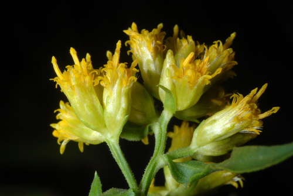
Flat-topped GoldenrodEuthamia graminifoliaGumweedGrindelia squarrosa Matt Lavin, some rights reserved (CC BY)") Hoary AsterDieteria canescensMany-flowered Aster (Tufted White Prairie Aster)Symphyotrichum ericoidesMaximilian SunflowerHelianthus maximiliani
Hoary AsterDieteria canescensMany-flowered Aster (Tufted White Prairie Aster)Symphyotrichum ericoidesMaximilian SunflowerHelianthus maximiliani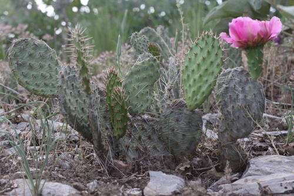
Plains Prickly Pear CactusOpuntia polyacantha Meghan Cassidy, some rights reserved (CC BY-SA), uploaded by Meghan Cassidy") Prairie ConeflowerRatibida columnifera
Prairie ConeflowerRatibida columnifera Matt Lavin, some rights reserved (CC BY-SA)") RabbitbrushEricameria nauseosa
RabbitbrushEricameria nauseosa Slender Cinquefoil (Graceful Cinquefoil)Potentilla gracilisWhite Prairie AsterSymphyotrichum falcatum
Slender Cinquefoil (Graceful Cinquefoil)Potentilla gracilisWhite Prairie AsterSymphyotrichum falcatum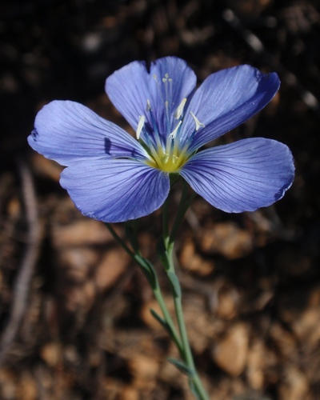
Wild Blue FlaxLinum lewisii Peter L Achuff, some rights reserved (CC BY), uploaded by Peter L Achuff") Wild ClematisClematis ligusticifolia
Wild ClematisClematis ligusticifolia Matt Berger, some rights reserved (CC BY), uploaded by Matt Berger") Yellow Monkey FlowerErythranthe guttata
Yellow Monkey FlowerErythranthe guttatagathers pollen at
Bastard ToadflaxComandra umbellataBoreal YarrowAchillea borealis Jim Morefield, some rights reserved (CC BY), uploaded by Jim Morefield") Canada Milk VetchAstragalus canadensis
Canada Milk VetchAstragalus canadensis Matt Lavin, some rights reserved (CC BY-SA)") Ground PlumAstragalus crassicarpus
Ground PlumAstragalus crassicarpus Lindley's AsterSymphyotrichum ciliolatumMany-flowered Aster (Tufted White Prairie Aster)Symphyotrichum ericoides
Lindley's AsterSymphyotrichum ciliolatumMany-flowered Aster (Tufted White Prairie Aster)Symphyotrichum ericoides davecz2, some rights reserved (CC BY-SA)") Marsh AsterSymphyotrichum boreale
Marsh AsterSymphyotrichum boreale Douglas Goldman, some rights reserved (CC BY-SA), uploaded by Douglas Goldman") Purple-stemmed Tall Aster (Swamp Aster)Symphyotrichum puniceum
Purple-stemmed Tall Aster (Swamp Aster)Symphyotrichum puniceum Alan Rockefeller, some rights reserved (CC BY), uploaded by Alan Rockefeller") Red ColumbineAquilegia formosa
Red ColumbineAquilegia formosa Roadside Agrimony (Woodland Agrimony)Agrimonia striataSlender Cinquefoil (Graceful Cinquefoil)Potentilla gracilis
Roadside Agrimony (Woodland Agrimony)Agrimonia striataSlender Cinquefoil (Graceful Cinquefoil)Potentilla gracilis gwt2102, some rights reserved (CC BY)") Spreading DogbaneApocynum androsaemifoliumWild Blue FlaxLinum lewisii
Spreading DogbaneApocynum androsaemifoliumWild Blue FlaxLinum lewisii
Boreal YarrowAchillea borealisCanada Milk VetchAstragalus canadensis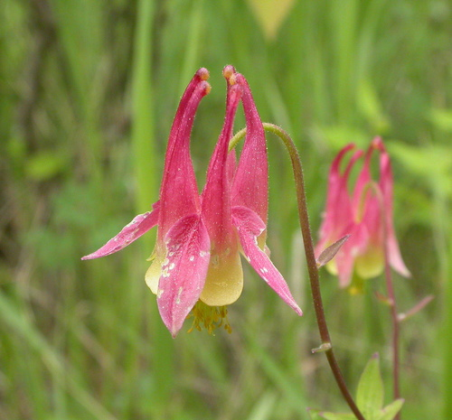
Eastern Red ColumbineAquilegia canadensisGround PlumAstragalus crassicarpus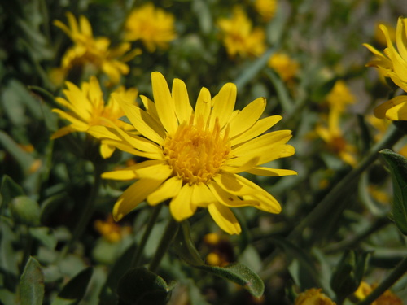
Hairy Golden AsterHeterotheca villosaLindley's AsterSymphyotrichum ciliolatumMany-flowered Aster (Tufted White Prairie Aster)Symphyotrichum ericoidesMarsh AsterSymphyotrichum borealePurple-stemmed Tall Aster (Swamp Aster)Symphyotrichum puniceum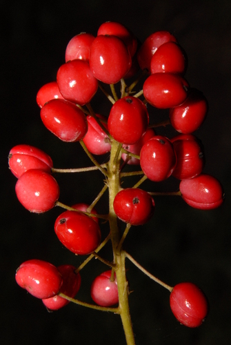
Red BaneberryActaea rubraRed ColumbineAquilegia formosaRoadside Agrimony (Woodland Agrimony)Agrimonia striataSlender Cinquefoil (Graceful Cinquefoil)Potentilla gracilisSpreading DogbaneApocynum androsaemifoliumWild Blue FlaxLinum lewisii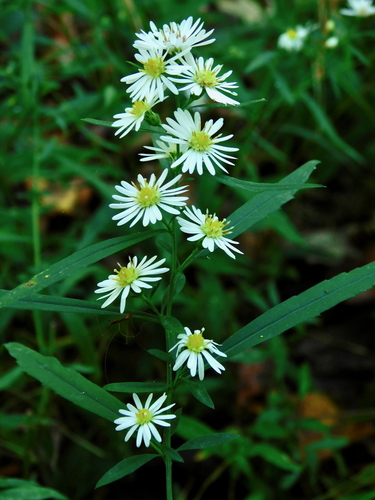
Willow AsterSymphyotrichum lanceolatum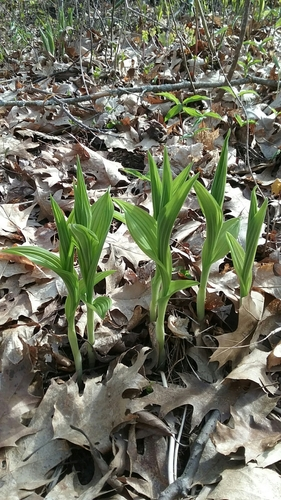
Yellow Lady's SlipperCypripedium parviflorum